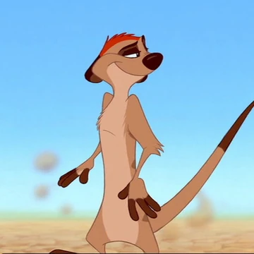

Тимон (англ. Timon) — вымышленный персонаж, антропоморфный сурикат, герой анимационного фильма «Король Лев», выпущенного киностудией «Walt Disney Pictures» в 1994 году. Появляется в первой части трилогии, спасая вместе с другом Пумбой львёнка Симбу от смерти в пустыне.Тимон — сурикат, лучший друг Пумбы и Симбы. Второстепенный персонаж мультфильмов «Король Лев» и «Король Лев 2: Гордость Симбы» и центральный персонаж мультфильма «Король Лев 1½». Тимон с Пумбой сыграли решающую роль в свержении Шрама.Тимон со своей мамой и дядей Максом живёт в крупной колонии сурикатов, где был отстранён от работы землекопа из-за обвала нескольких тоннелей . Позже мама уверяет его, что это случайность и предлагает Тимону стать часовым, но Тимон слишком увлёкся исполнением песни, и на колонию напали гиены. После провала быть землекопом и сторожевым, Тимон становится изгоем. Убеждённый в том, что в родной колонии он стал лишним звеном, Тимон мечтает о лучшей жизни без забот, в которой не нужно прятаться от опасностей, быть свободным от правил и обязанностей и жить в своё удовольствие. Поэтому он принимает решение уйти из колонии в поисках своей судьбы. Спустя всего несколько часов он начинает плакать и звать свою маму. У старого баобаба Тимон встречает Рафики, который посоветовал найти ему Хакуну Матату и «взглянуть за пределы того, что видишь». Не поняв метафоры, Тимон воспринимает слова буквально и начинает оглядываться по сторонам. Он решает двинуться к Скале Предков на Земли прайда. По дороге Тимон наталкивается на кабана по имени Пумба и вместе с новым приятелем продолжает путь к дому-мечте.
